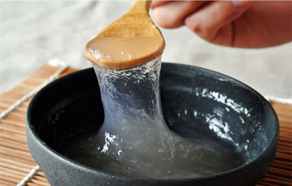

浙江杭州盛产莲藕，西湖藕粉采用杭州地区高品质莲藕纯天然制作，无任何添加成分，是小孩、孕妇、老人绝佳的养生食品，民间许多地方流行这样一句话“男不离酒，女不离藕”，指的就是人们对藕粉的钟爱，特别是对于女性朋友们，藕粉有美容养颜的功效。藕粉怎么冲呢?下面就为大家详细介绍浙江特产西湖藕粉。
一看、纯藕粉颜色稍微有点暗，雪白的藕粉就有问题了。(藕粉含有丰富还原糖和铁元素，很容易氧化而颜色变暗)
二闻、纯藕粉有清淡的藕香味，假藕粉味道怪异，可能还会有刺鼻气味。 三尝、纯藕粉入口即化，而掺了其他淀粉的藕粉入口易粘结。 四泡、纯藕粉冲泡好后是红褐色或微红色，假藕粉是呈白色或者怪异的深红色,纯藕粉冲泡好后是红褐色或微红色.
另外，用简单的方法就可以鉴别：将一勺藕粉与凉水稀释搅拌后，就放在那沉淀20分钟后看结果。若是上一层清水会有颜色那就说明很可能添加了色素之类的添加剂。 因为很多不法商家购买了我们这边的纯藕粉回去再二次销售就会添加很多其他的淀扮。而这些添加了其他淀粉的藕粉是冲泡不了莲藕真实煮熟的颜色〔褐色〕。
1.取20g左右藕粉放在碗中。 2.加少量凉水，把藕粉溶解开，凉水不要加太多。 3.再加入滚烫的开水，边加水边搅拌，直到藕粉呈透明微红色为止。
第3步加的开水，一定要用刚烧开的开水，饮水机里的水是冲不熟的。没有冲泡熟的纯藕粉就是白色乳状，您再倒进锅里面煮熟即可食用，也可以放微波炉或者锅里加热下即可。 粉量多冲泡颜色就深，粉量少冲泡颜色就比较透明。
1、取20g左右藕粉至于碗中，同时加入一勺小麦胚芽片。 2、加入少量凉水搅拌均匀。 3、将约150ML滚烫的沸水快速加入搅拌好的糊糊中，直至糊糊变稠，变成琥珀状，然后用勺子搅匀。
1. 清热凉血：莲藕生用性寒，有清热凉血作用 2. 通便止泻、健脾开胃 3. 益血生肌 4. 止血散瘀
藕粉除含淀粉、葡萄糖、蛋白质外，还含有钙、铁、磷及多种维生素。中医认为藕能补五脏，和脾胃，益血补气。生藕性味甘凉，加工成藕粉后其性也由凉变温，既易于消化，又有生津清热、养胃滋阴、健脾益气、养血止血之功效。
藕粉都是用新鲜莲藕制作的，要想制作出好藕粉，必须先保证用好的原材料。藕粉好吃但是挖藕却是非常辛苦的，对技术要求高。我们这边每年到挖藕的时候都是请专业师傅挖的，如果非专业的去挖藕，不但赚不到钱，连成本都捞不回来。
池塘里泥巴很臭很脏，一天下来工人的脸上都会沾满淤泥。现在很少有人愿意下水挖藕。目前，专业工人一天能挖上300-400斤。但专业挖藕的工人不好请，最少250元一天。有些挖藕经验丰富的老师傅，开价都是400元一天。为了收藕生意顺利，还必须培训一些工人挖藕。
1、将挖回的莲藕用自来水洗净，然后用专业的机器把莲藕磨成浆。 2、把藕浆放入大的纱布袋里揉搓，新鲜的藕汁一滴滴的下沉。 把藕浆放入大的纱布袋里揉搓
3、将含有淀粉的藕粉浑浊水放在阴凉的地方沉淀两个小时，底下白色的就是藕粉，轻轻把上面的清水舀去，再把底下的藕粉舀出。 4、藕汁去杂质，然后用纱布把藕汁脱水。 5、这一步真的很重要了，把已脱水的湿藕粉用刀，打成薄片，然后铺平晒干。